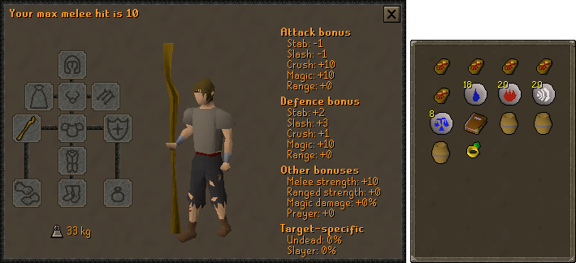

K'ril Tsutsaroth - Potion Sharing Attacker

Arclight > Abyssal Tentacle > Abyssal Whip > Abyssal Bludgeon > Godsword
Sara Godsword = Crystal Halberd > Dragon Halberd > Arma Godsword > Dragon Dagger
Zamorakian Hasta* > Abyssal Whip
Dragon Defender > Rune Defender > Toktz-ket-xil
None
Slayer* > Serpentine > Warrior > Fighter > Neitiznot > Berserker > Verac's
Bandos Chestplate > Fighter Torso > Verac's > Other barrows
Bandos Tassets > Verac's > Other Barrows
Primordial > Dragon
Barrows > Dragon > Rune > Adamant > Regen Brace > Combat Brace
Fire > Ardougne 2+ = Skillcape (t) > God Cloak > Obsidian > Legend's
Torture > Fury > Glory
Warrior (i) > Berserker (i) > Warrior > Berserker > Explorer's > Life
Notes
- The tank will bring super combat potions to give you
- *The Zamorakian Hasta is used to not degrade your primary weapon on minions and kill count, and as a Zamorak item
- *On a Greater Demon or K'ril Tsutsaroth slayer task